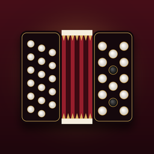
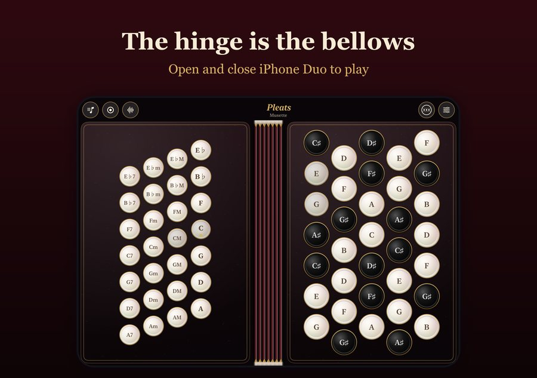
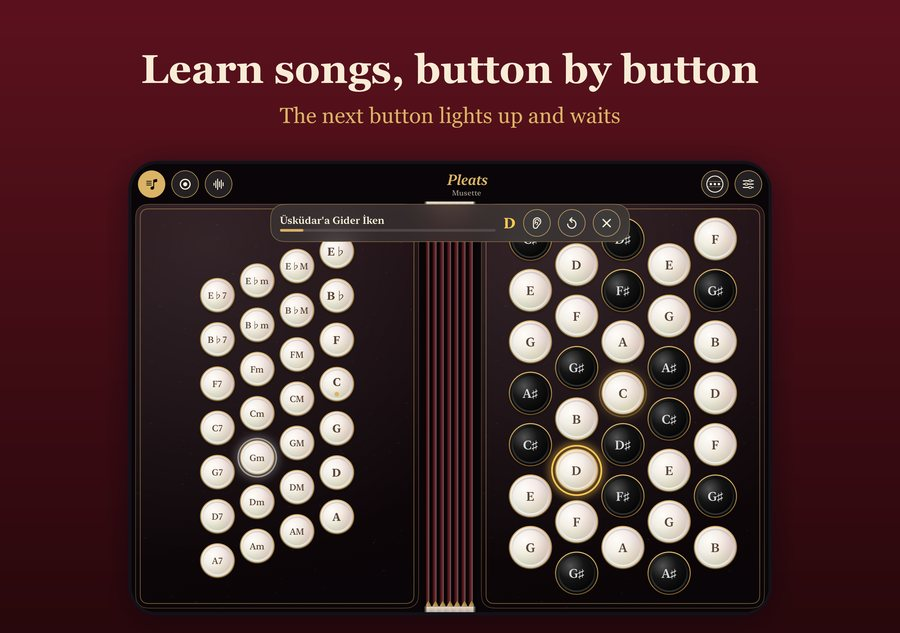
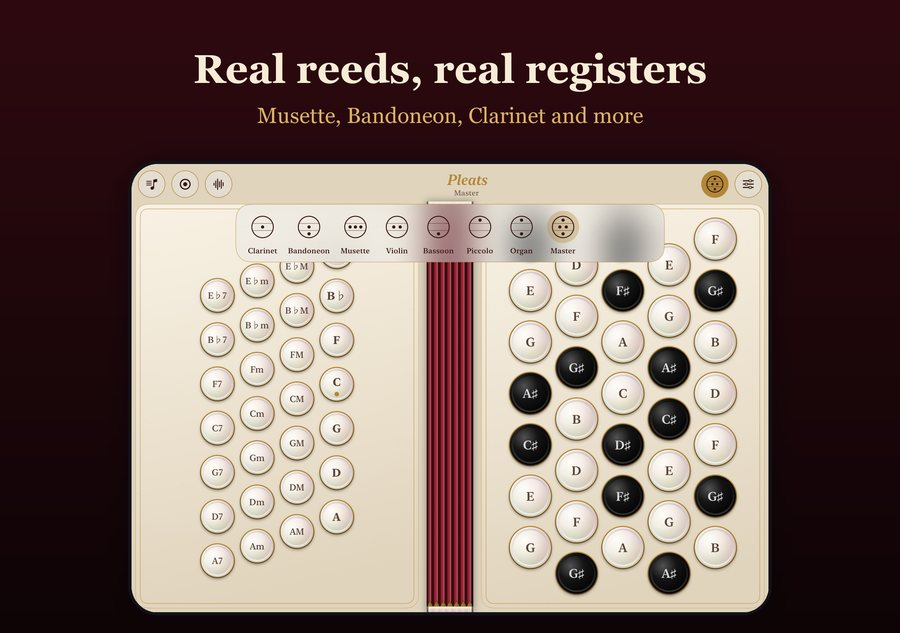
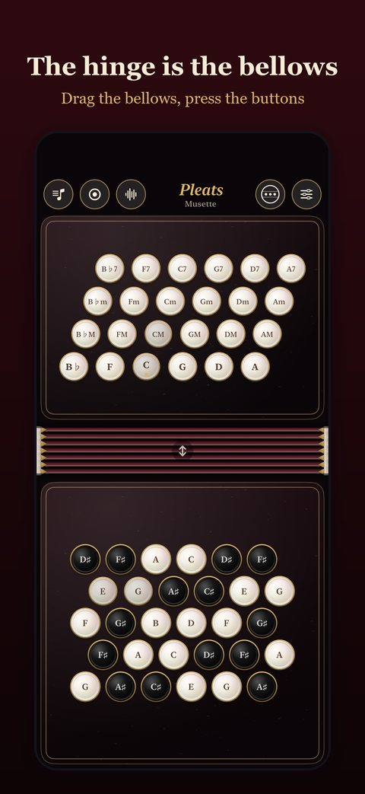
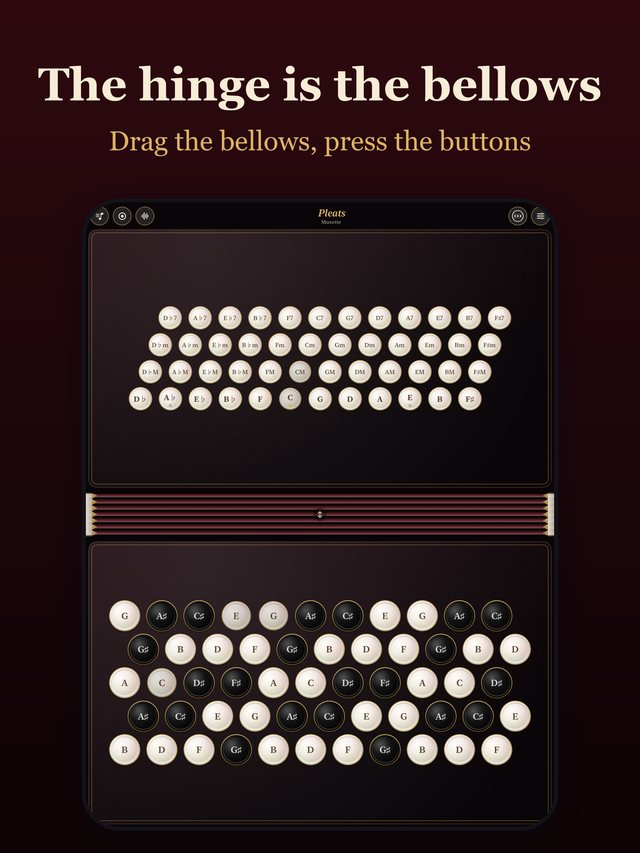

Play the accordion on iPhone Duo
Pleats turns iPhone Duo into a real, playable accordion. Hold it like a book: the fold is the bellows. Open and close the hinge to pump air, press pearl buttons for melody, bass and chords, and learn songs one lit button at a time. On every iPhone and iPad, drag the bellows instead.





A real accordion, folded into your phone
Questions
Can I play the accordion on iPhone Duo?
Yes. Pleats uses the iPhone Duo hinge as the bellows: hold the phone like a book, half open, and open and close it while pressing the buttons.
Does Pleats work on other iPhones and iPad?
Yes. Without a hinge you drag the bellows strip in the middle of the screen back and forth, or turn on Steady air to play without pumping.
Is it a button accordion or a piano accordion?
A button accordion: a chromatic five-row C-system board, or a diatonic G/C push–pull board, with Stradella bass and chord buttons.
Can I learn songs with Pleats?
Yes. Pick a song and the next button lights up; play it with air and the song moves on at your pace. You can hear each song first.
Does Pleats use samples?
No. Every note is synthesized on the device from several detuned reeds, so it responds to the bellows like a real instrument.
What does Pleats Pro add?
Five more registers, three more voices, ten more songs and sharing of recordings, for one payment. No subscription.